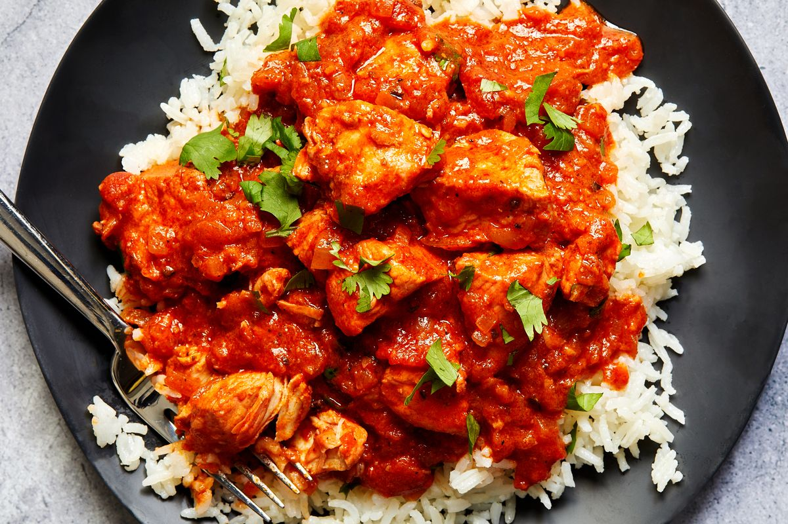

Yaksik
Cuisine: Korean (Dessert)
Rating: ⭐⭐⭐⭐⭐
Calories: 439 per serving
Total Time:1 hour 10 minutes
Prep Time:10 minutes
Yaksik translates to "medicinal food" in Korean. This is because of its use of heavenly honey, in combination with sweet rice and a variety of fruits and nuts. The end result is a divine mix of sweet with healthy and softness. Enjoy!
Jump to IngredientsGot Everything You Need?
Instructions:
- Combine dark brown sugar, soy sauce, honey, sesame oil, cinnamon powder, and sea salt in a bowl. Mix well.
- Rinse the rice with running water until the water runs clear. Drain rice and let sit for 10-20 minutes.
- Add rice, water, and Step 1's mix into a rice cooker and mix well. Add 2 tbsp of nuts and the fruit on top after, making sure they're evenly spread.
- Cook on "multi-steam" setting for 35 minutes.
- Gently stir rice, nuts, and fruit. Pour into a rectangular mold and let cool for 20/30 minutes.
- Garnish with 1 tbsp pine nuts and sliced jujube.
- Slice yaksik into preferred size and serve.
Gallery:
Other Good Recipes
-
 Loukoumades
Loukoumades
Loukoumades
Rating: ⭐⭐⭐⭐
Calories: 167 per serving
Total Time: 1 hour 45 minutes
Prep Time: 1 hour
-
 Sopes
Sopes
Sopes
Rating: ⭐⭐⭐⭐
Calories: 62 per serving
Total Time: 55 minutes
Prep Time: 40 minutes
-
 Chicken and Waffles
Chicken and Waffles
Chicken and Waffles
Rating: ⭐⭐⭐⭐
Calories: 500 per serving
Total Time: 12 hours
Prep Time: 2 hours
-
 Chicken Madras
Chicken Madras
Rating: ⭐⭐⭐⭐
Calories: 467 per serving
Total Time: 55 minutes
Prep Time: 20 minutes